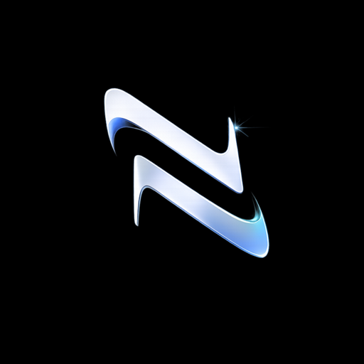

Produtos NORO CODE
Ideias autorais com espaço para evoluir.
Jogos, aplicativos e plataformas SaaS concebidos com identidade, visão de produto e base técnica sólida.
Explorar portfólio ↗
NORO CODE Inicie uma conversa ↗Produtos digitais e soluções tecnológicas
Apps, jogos, SaaS e soluções sob medida desenvolvidos com engenharia e propósito.
01 / Nossa essência
Duas frentes. Uma mesma engenharia.
Produtos NORO CODE
Jogos, aplicativos e plataformas SaaS concebidos com identidade, visão de produto e base técnica sólida.
Explorar portfólio ↗Tecnologia para negócios
Sistemas, aplicativos e automações alinhados ao processo e aos objetivos de cada empresa.
Conhecer soluções ↗02 / Resultados
Resultados gerados através da implantação de automação!
Informações obtidas ao longo das implantações.
03 / Portfólio
Portfólio com amostra de alguns projetos criados.
04 / Soluções para empresas
Entendemos a operação, desenhamos o caminho e construímos tecnologia que pode acompanhar o negócio.
Sistemas desenhados a partir do processo e dos objetivos da sua empresa.
Vamos conversar ↗Experiências digitais intuitivas para Android e iOS.
Vamos conversar ↗Menos tarefas repetitivas e mais eficiência para a operação.
Vamos conversar ↗Tecnologia desenvolvida com atenção à proteção de dados e à confiabilidade da operação.
Vamos conversar ↗05 / Como trabalhamos
Construímos soluções para que a tecnologia gere ganhos claros na operação e no negócio.
Impacto para o cliente
Processos visíveis e decisões mais seguras.
Menos esforço manual na rotina da equipe.
Operações mais eficientes e menos desperdício.
Tecnologia alinhada ao crescimento do negócio.
Desenvolvimento sob medida
Entendemos necessidades, processos e objetivos para construir uma tecnologia personalizada, sem pacotes genéricos.
06 / Sobre a NORO CODE
A NORO CODE nasceu da união de dois irmãos engenheiros com competências complementares para transformar ideias em experiências digitais consistentes.
Inicie uma conversa ↗07 / Fundadores
Estratégia, tecnologia e execução reunidas para transformar desafios em produtos digitais consistentes.
Fundadora 01
Engenharia de Software, visão de produto e desenvolvimento de experiências digitais.
Fundador 02
Engenharia de Controle e Automação aplicada a processos, eficiência e evolução tecnológica.
08 / Principais dúvidas
Algumas respostas rápidas sobre como a NORO CODE conduz produtos digitais, software sob medida e soluções para empresas.
Sim. O trabalho parte da necessidade, do processo e dos objetivos do cliente para desenhar uma solução sob medida, sem partir de pacotes genéricos.
Não. A atuação acontece em duas frentes: produtos próprios da NORO CODE e soluções digitais para empresas.
Sim. A conversa inicial ajuda a entender o problema, organizar prioridades e definir o melhor caminho técnico antes da construção.
Sim. A landing apresenta essas capacidades porque elas fazem parte do ecossistema de desenvolvimento da NORO CODE.
As áreas de resultados e portfólio estão preparadas para receber dados reais. Indicadores demonstrativos serão substituídos por informações validadas antes da divulgação oficial.
09 / Contato
Fale com a NORO CODE sobre seu próximo produto, projeto ou desafio.